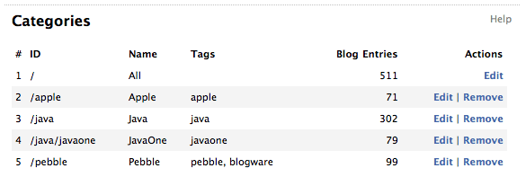

@header@

<table width="100%" cellspacing="0" cellpadding="8" class="item">
  <tr class="itemHeader">
    <td>
      Categories
    </td>
  </tr>
  <tr class="itemBody">
    <td>
      <p>
      Each blog entry can be organized into one or more categories, the categories being defined as a hierarchy
      starting at the root category with an ID of "/". Underneath this, more categories can be defined in a file
      system style structure, with the forward slash character being used to specify levels in the hierarchy. For example,
      in the screenshot below, there are three top-level categories of Apple (/apple), Java (/java) and Pebble (/pebble). In addition to this, the
      Java category has a subcategory of JavaOne (/java/javaone).
      </p>

      <p>
      <div align="center">
      
      </div>
      </p>

      <p>
      To edit the categories defined for your blog, click the <b>Categories</b> link after logging in. This will open a page in which you can edit the categories. To add a new category, click the <b>New category</b> link after logging in.
      </p>

      <p>
      <h5>Tagging</h5>
      For more information about tags and tagging, please see <a href="help/tags.html">Tags</a>.
      </p>

    </td>
  </tr>
</table>

@footer@